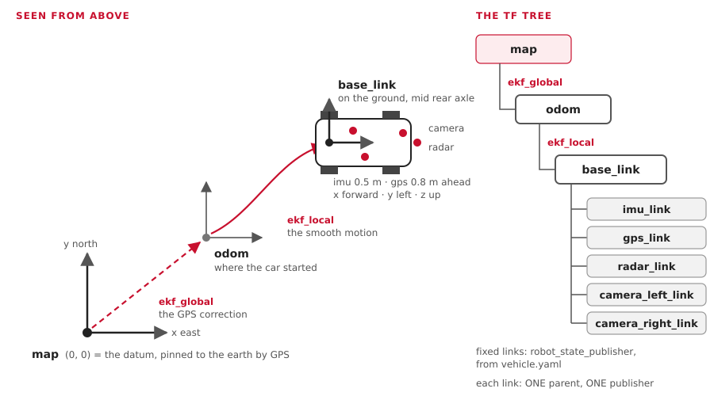

"Localization" means: where is the car, which way is it facing, and how fast is it going? No one sensor answers that well. This page shows how our car mixes several weak answers into one good one.
You'll learn:
- odometry, and why it drifts;
- what an IMU measures;
- fusion, and the idea behind a Kalman filter, with one tiny example in numbers;
- robot_localization, the stock package we use;
- the frames
map,odomandbase_link(REP-105), and TF; - exactly what our two EKFs read, from their config files;
- how to look at all of it on your own computer.
Maps and position has the big picture of the two EKFs and the map. This page explains why it works.
1. Odometry: counting your steps
Odometry = working out where you are from how you've moved.
start ──► 1.0 m/s for 2 s, turning 0.1 rad/s ──► "I'm about 2 m ahead, a bit to the left"| Our odometry source | Measures | Topic |
|---|---|---|
| Wheel speed (today: the Pico 2 encoder; KEFC: Hall sensors on two wheels) | forward speed | /vehicle/odom |
| The steering angle (KEFC: the KTC-100 pot, through the Jrk) | turn rate = speed × tan(angle) ÷ wheelbase | /vehicle/odom |
| The IMU's gyro | turn rate | /sensors/imu/data |
Why it drifts
Every small error is added up forever.
| Error | After 100 m |
|---|---|
| Wheel size off by 1 % (ours is a guess: 0.30 m) | 1 m too far or too short |
| Heading off by 1° | 1.7 m to the side |
| Heading off by 5° | 8.7 m to the side |
Heading errors hurt most. That's why GPS is needed to stay true over a long drive.
2. The IMU
An IMU (inertial measurement unit) is a chip that feels motion.
| Part | Measures | Good | Bad |
|---|---|---|---|
| Gyro | turn rate (rad/s), on 3 axes | fast and smooth | a small bias: the heading creeps |
| Accelerometer | acceleration (m/s²), with gravity | shows tilt | noisy; twice-integrated it's useless for position |
| Magnetometer | the earth's magnetic field | an absolute heading | fooled by the motor and steel. Not used by us yet |
Ours: a Yahboom 10-axis IMU on USB. imu_filter_madgwick turns its raw data into a
relative orientation. The EKFs use only its yaw rate: how fast the car turns.
3. Fusion: two weak answers make one good one
| Source | Strong at | Weak at |
|---|---|---|
| Wheels + IMU | smooth, fast (50+ Hz), short-term | drift over long distances |
| GPS | never drifts | noisy, slow (1-5 Hz), can jump |
Fusion keeps the best of each: smooth from the wheels and IMU, true from GPS.
4. The Kalman filter, in one tiny example
A Kalman filter keeps two things for every number it tracks:
- a best guess;
- how unsure it is (the variance: the error squared).
It repeats two steps.
| Step | What happens | Uncertainty |
|---|---|---|
| Predict | move the guess with the odometry | grows |
| Update | a measurement arrives: move the guess toward it | shrinks |
One dimension, in numbers
The car drives along a straight road. Position in metres.
Before: the wheels say 10.0 m. After a long drive, they're unsure: variance 4 (about ±2 m).
A GPS fix arrives: it says 12.0 m, variance 1 (about ±1 m).
| Step | Sum | Result |
|---|---|---|
| How much to trust GPS: the gain K | 4 ÷ (4 + 1) | 0.8 |
| New guess | 10.0 + 0.8 × (12.0 − 10.0) | 11.6 m |
| New variance | (1 − 0.8) × 4 | 0.8 (about ±0.9 m) |
- The answer sits closer to GPS, because GPS was less unsure.
- The new variance (0.8) is smaller than either (4 or 1). Two answers beat one.
- Then the car drives on: predict adds the movement, and the variance grows again until the next fix.
An EKF (extended Kalman filter) does the same with many numbers at once (x, y, heading, speeds...), and handles turning, where the maths isn't a straight line.
5. robot_localization: the stock EKF
We don't write our own filter. robot_localization (version 3.8.3, Jazzy) gives us:
| Node | Job |
|---|---|
ekf_node |
the filter. We run it twice: ekf_local and ekf_global |
navsat_transform_node |
GPS degrees → map metres (Learn: GPS) |
Each input has a list of 15 true/false values: which parts of the message to use.
x, y, z, roll, pitch, yaw, vx, vy, vz, vroll, vpitch, vyaw, ax, ay, az6. Frames: map, odom, base_link (REP-105)

| Frame | Is | Moves? | Set by |
|---|---|---|---|
map |
pinned to the earth at the datum. x east, y north | never | - |
odom |
where the car started today | can hop a little when GPS corrects it | ekf_global publishes map → odom |
base_link |
the car: on the ground, under the middle of the rear axle. x forward, y left | smoothly | ekf_local publishes odom → base_link |
imu_link, gps_link, radar_link, camera_*_link |
each sensor | fixed to the car | robot_state_publisher, from vehicle.yaml |
REP-105 is the ROS rule for these names. REP-103 sets the units and directions: metres, radians, x forward, y left, z up.
TF: the frame tree
TF is ROS's service for "where is frame A, seen from frame B, at time t?"
| Idea | Means |
|---|---|
| A tree | each frame has one parent. map → odom → base_link → gps_link |
| One publisher per link | two nodes publishing odom → base_link would fight. That's why imu_filter_madgwick has publish_tf: false |
/tf |
links that move (the EKFs), many times a second |
/tf_static |
links that never move (sensor mounts), sent once |
| Chaining | ask for map → gps_link; TF multiplies the links in between |
7. Our two EKFs: their real inputs
From src/localization/aav_localization/config/. Both run at 30 Hz, in 2D
(two_d_mode: true: no height, roll or pitch).
| Input | What it gives | ekf_local uses |
ekf_global uses |
|---|---|---|---|
/vehicle/odom (the backend) |
wheel speed, turn rate | vx, vy, vyaw | vx, vy, vyaw |
/sensors/imu/data |
the gyro | vyaw | vyaw |
/localization/gps/odom (navsat_transform) |
GPS as map x, y | - | x, y |
ekf_local |
ekf_global |
|
|---|---|---|
world_frame |
odom |
map |
| Publishes | /localization/odom/local |
/localization/odom/global |
| TF | odom → base_link |
map → odom |
| Used by | Nav2's controller and local costmap | Nav2's planner and global costmap; navsat_transform |
| Starts at | (0, 0), sure of it | start_x, start_y, start_yaw from the launch file; unsure (yaw ±18°) |
Three choices worth knowing:
| Choice | Why |
|---|---|
| vy = 0 is fused | a car can't slide sideways. Telling the filter so keeps it honest |
| Yaw rate only, never yaw | no magnetometer, so the IMU's heading is only relative. The start heading comes from start_yaw; GPS corrects it once the car moves |
| Each backend sets its own covariance | the spine works out the turn rate from the measured steering. Today's encoder can't, so it sends a huge covariance (1e3), and the EKF ignores that part |
With gps:=false, ekf_global doesn't run, and a fixed map → odom (zero) stands in.
How well it works
| Where | Result |
|---|---|
| Gazebo | both EKFs within 0.2 m, parked |
| Bench | 0.03-0.3 m from the truth |
| The car | never run yet |
Try it
| You want to see | Run |
|---|---|
| Start Gazebo, with both EKFs | pixi run sim |
| The frame tree, and who publishes each link | pixi run tools/ros.sh ros2 run rqt_tf_tree rqt_tf_tree |
| The car on the map, live | pixi run tools/ros.sh ros2 run tf2_ros tf2_echo map base_link |
| The GPS correction alone | pixi run tools/ros.sh ros2 run tf2_ros tf2_echo map odom |
| The local estimate | pixi run tools/ros.sh ros2 topic echo --once /localization/odom/local |
| Every setting the filter really uses | pixi run tools/ros.sh ros2 param dump /ekf_global |
| Drive, then watch the numbers change | pixi run keyboard --sim |
Drive in a circle with the keyboard, and watch tf2_echo map odom: it stays small.
That's the GPS soaking up the drift.
Where this lives in the code
| What | Where |
|---|---|
| The EKFs' settings | src/localization/aav_localization/config/ekf_local.yaml, ekf_global.yaml |
| GPS to metres | src/localization/aav_localization/config/navsat.yaml |
| How they start, and topic names | src/localization/aav_localization/launch/localization.launch.py |
| The IMU filter | src/sensors/aav_sensors/config/imu_filter.yaml |
| Sensor positions on the car | src/aav_description/config/vehicle.yaml |
Wheel speed into /vehicle/odom |
aav_spine/spine_bridge.py, aav_legacy encoder_udp.py, aav_gazebo/gazebo_adapter.py |
| Why the EKFs meet in TF, not on a topic | Topic areas |
| Frames in the contract | docs/interfaces.yaml, frames: |